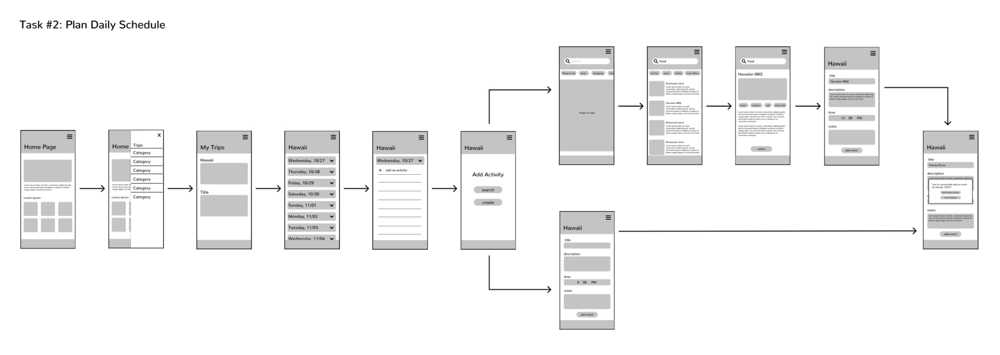

Background
This is an equity project I worked on for school. I designed a travel planning app to help travelers with low resources and make traveling affordable. It focuses on helping users plan out several important details, such as knowing what they should pack, making travel arrangements, and planning their daily schedule. Additionally, it addresses problems that they may encounter by providing links to helpful resources and a specified backup plan. My goal was to help travelers create an organized plan for their trip and alleviate the amount of research and stress that they may have.
Research
Survey
In order to learn more about what travelers are concerned about when planning their trip, I conducted a short survey. First, I asked whether they had a budget depending on the destinations they chose. All of the respondents said yes: one said they do a lot of research in order to determine how much they will be spending and another said, although she did not have a set budget for her long trip, she tried to save up as much money as she could to pay bills and buy food.
I also wanted to know what kinds of difficulties people have encountered during their travels and what resources would've been helpful to them. Two people mentioned that language barriers can really delay travel plans and others mentioned problems like currency exchange, health care access, housing, transportation, phone plans/sim card, and not knowing how to get around.
Lastly, I wanted to know whether it is common for people to use a travel planner app, so I asked how people organize their trips. Some people said they don't really have a detailed itinerary, but they have a rough plan they follow and others said they use google docs and spreadsheets to outline everything. Surprisingly, none of the respondents mentioned anything about using an app. So, either the idea of using a travel planner app never struck them or they think that it might be too complex to learn how to use. This helped me consider how I would promote my app and make it intuitive and helpful.
Existing Travel Apps
Speaking of other travel planning apps, I discovered many kinds of apps that already help travelers plan their trip. They are a very helpful reference in building my app, but there are some slight differences that I would like to promote in mine, such that mine is focused more on helping people with low resources and not just the general audience. I want my app to help people be prepared for things they could come across, such as things to pack, having a plan B, reminding them their scheduled events, and allowing them to write out a detailed schedule to help alleviate travel stress. These are all features that I did not see in the apps that I explored. They allow users to create trips and add places to their itinerary, but they don't help users with finding a good hotel or other necessities that could help them prepare. They are not as detailed and some of them have very complex interfaces.
User Flow and Wire Flow

I began brainstorming by designing some user flows and wire flows. I started off with a blue theme for the user flow and as I made changes, I colored the newly added parts in green and the parts that I removed in red. This way, I could quickly identify the new changes I made. I thought that my first task would be creating an account / logging in, but I realized how insignificant that was, so I removed it. Working with the user flow really allowed me to layout all of the details I imagined my app to have. The 'create a trip' task and the 'plan travel arrangements' task were unnecessarily long, but it made me deeply consider whether it was necessary to implement all of them as I was designing my prototype.
My wire flows were a very rough sketch of how I imagined my app to look. As I was quickly designing each screen, I realized how hard it was to know where to place every little detail, which urged me to look for inspiration and references to help me when designing the actual interfaces.
Visual Design
When thinking about the visual design of my app, I aimed for an intuitive and clean design. I didn't want it to feel so text heavy to users and I wanted to use more visuals and icons instead because I didn't want my app to feel overwhelming and be stressful to use.
First, I went online and saved several inspiration pictures of design interfaces that I liked. Then, I started off by copying a layout and slowly started to change the content. For the first task, creating a trip, I referenced existing travel apps, so I could include steps that are necessary such as selecting a location and selecting dates.

For the next three tasks, the inspirations I saved were not always helpful, but because I wrote down a list of features and details that I had in mind, it allowed me to foresee how much information I would need to include on a screen. I started adding icons, titles, and descriptions based on this list and doing so really enabled me to visualize how the layout would look.
Many testers mentioned that my app reminded them of Google's design system, so they found the interfaces very comforting and familiar.. Although that was not my intent, I went with it and started to use Google as my reference because hearing that my app was comforting means that users would possibly enjoy using this app.
The Prototype
Because we only had a few weeks to work on this project, I focused on prototyping 4 main tasks that would best showcase the purpose of my app.
One of the main things I noticed from my research is that not a lot of people use a travel planning app. On top of designing intuitive and clean interfaces, I considered how I would get returning users. So, I designed the welcome page with polaroids to give users the option to change the photos and captions. My intention was to make the app feel personalized to the user and have them form a connection with the app.
Task 1: Create a Trip

The home page of this app starts on a page of created trips by the user. They are allowed to create new trips or plan what they will need for a specific trip. The user can pin one of their trips and access it through the pin icon in the bottom navigation bar, which is meant for easy access to the trip they are going on.
I didn't get very far along with designing the first task before my first usability testing, when a tester pointed out that it looked like any other travel app and he didn't see how I was addressing an equity problem. This made me realize that I was not focusing on designing the right tasks, which urged me to really consider what designs would actually present the main point. I ended up shortening the 'create a trip' task by only requesting users to select a location, select their dates, and name their trip. I took out the long process of adding or editing attendees and selecting their budget because I realized that if the process of creating a trip got too long, users would not want to finish the task.
Task 2: Plan What to Pack

The user can plan what they would like to pack by clicking on 'My Suitcase'. At the top, there is a navigation bar for them to either view their own list or see the suggested items. They are allowed to create or edit categories and items to their own list and use it as a checklist when actually packing. They can also view the items that the app recommends, which is based on the location of the trip and places that the user has planned to tour.
Task 3: Access Health Care

The user can also access 'Helpful Resources,' which is specified to the travel destination selected. Based on the research I conducted, I decided to include resources such as currency converter, translation, health care, getting a ride, and getting help for lost items. I added a simple description to which each resource does, for example translation will provide the user with simple phrases they could learn.
I focused my task on presenting how users could access health care. First, I added some helpful emergency contacts and other helplines for users. Then, I added some hospitals that users could go to and they are filtered to show users which ones are in network with the travel insurance they purchased.
Task 4: Edit Backup Plan

I focused my fourth task on allowing users to view and edit their backup plan. The app generates a duplicate schedule from the user's initial plans and modifies certain activities for specific reasons like change in weather or if the activity is outside of the user's budget. The changes are made in green and users are allowed to click on the activity and learn more about why it was modified. They also have the ability to change that activity if they don't like it.
Additional Features
Other things that I didn't prototype, but can be done in the app are planning travel arrangements, which is where the app will help the user select the most suitable transportation and lodging or allow users to input their own plans. Users can specify the number of attendees going on the trip and also input specific details about each person to help with making travel plans. They can share specific sections in their itinerary with other attendees, such as the travel arrangements and the daily schedule/activities. They can also input their budget or have the app generate a range for them. The app will then use this amount to help the user stay within the range when planning. They can also plan out their daily schedule, which is where they can create their own activities or select places to go. As they are creating their initial schedule, the app will automatically generate their backup plan and add specific things to the 'Suggested Items' list for what to pack based on the activities selected.
Usability Testing and Revisions
To test my prototype, I wrote a scenario for each task and had a variety of users try and complete each one. After doing multiple usability testing, I discovered how some of my designs were not as intuitive or I was focusing on or highlighting the wrong information. I also realized how small some of my hotspots were. Some of my testers were people that were familiar with how the prototype and hotspots worked, while others were not. The people that were familiar would sometimes use the hotspots to help them identify where to click, while the other set of people thought that everything was clickable.
The first task I tested was “create a trip.” There were several times when my users would get distracted by something that popped out to them more, so I fixed this by dimming down some of the colors on buttons, shrinking less important information and enlarging more important ones. Many users also had a hard time clicking on the distance filter because the hotspot was too small, so I made sure to correct all of my hotspots and make it easier for them to click on.
The second task was to plan what to pack. Many users found interacting with 'My List' very overwhelming and confusing. Having some drop down menus open and some closed made it hard for users to understand what was going on. Having them explore the list by adding/deleting an item and opening/closing categories made the user experience confusing and steered the focus on navigating to 'Suggested Items' away. So I completely removed exploring 'My List' and closed all of the drop down menus. I only requested users to open up the drop down menu for 'Electronics,' so that they could see the difference after they add an item from 'Suggested Items.'
The third task was to access health care. Many users didn't know that they were supposed to filter the hospitals by type because the type of hospital written on each container did not stand out to them. They were also getting distracted or misled by specific words that I mentioned in the scenario. I rephrased my scenario and made sure to mention the word 'type,' so that users hopefully know to click on the filter. I also bolded the type of hospital, so that it stood out more.
The fourth task was to edit your backup plan. The main thing that people found confusing was the three dots icon that showed up when users were trying to edit the modified activity. Because the task asked them to change the activity, they assumed that the three dots were what they were supposed to click, when it was actually supposed to be the “change activity” button located at the bottom. So, I removed the check box and three dots on the modified activity page, so that users wouldn't get confused.
Conclusion
This travel app prototype was designed in Figma with a total of 49 screens. I am quite satisfied with the final product, although there are still aspects I would have liked to work on further. Overall, I learned how to use many features in Figma and I am most proud of the designs I created and how gender neutral it is. I found it rewarding that I was able to include many features I had in mind without making the interface look overwhelming and text-heavy.
Challenges

This app was difficult for me to create and required a lot of research because I am not someone that travels often enough, but I learned a lot about how traveling works and what are the essentials. In terms of design, I found it quite challenging and time consuming to design a single screen as well as organizing my layers. Being able to copy and paste a screen and modify it was really helpful, but I had to remember to organize the layers first or else I would end up repetitively organizing each screen.
What Can Be Improved
- Additional usability tests needed after revisions
- Design a logo and choose a suitable app name
View prototype